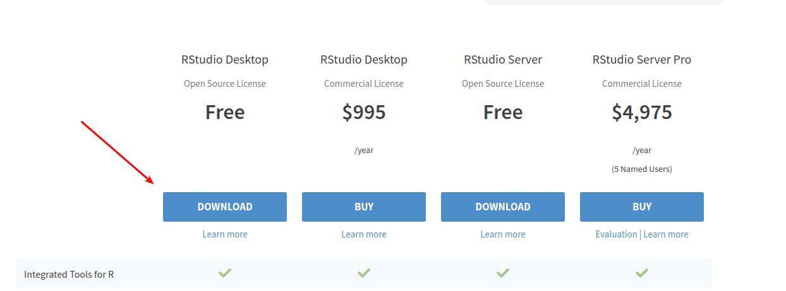
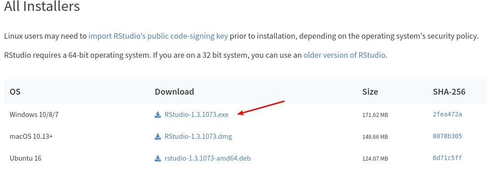

Preparando o Ambiente¶
Agora que já sabemos o que é o R, podemos começar a criar o ambiente em que vamos desenvolver nossos projetos.
Instalando o R¶
Nosso primeiro passo será a instalação do R. Como já vimos anteriormente o R é a nossa linguagem de programação, então pense em instalar o R como se estivesse instalando um novo idioma para o seu computador.
Pelo R ser uma linguagem livre, existem várias instituições espalhadas pelo mundo que hospedam o instalador. Inclusive no Brasil, temos várias instituições que hospedam o R, como a Fiocruz e a USP. Para ver a lista completa de todas essas instituições acessando https://cran.r-project.org/mirrors.html.
Você pode seguir a instalação da distribuição que desejar. Seguiremos com a distribuição disponibilizada pelo Fiocruz no site https://cran.fiocruz.br/.
Após acessar o site, em “Download and install R”, clique em “Download R for Windows”.
Para o nosso objetivo, escolheremos em “Subdirectories” a opção “base”.
Após isso é só clicar em “Download R 4.0.2 for Windows”.
Aviso
É possivel que durante a sua instalação, uma versão mais atual do R esteja disponível. Nesse caso, baixe a versão mais atual do R.
Um arquivo executável contendo o R será baixado em sua máquina.
Em construção
Perfeito! Agora você possue o R instalado em sua máquina. Entretento, precisamos de mais um passo na preparação do nosso ambiente.
Instalando o Rstudio¶
Se você já viu ou teve algum contato anterior com o R, provavelmente se deparou com um programa cheio de ferramentas. Na verdade, como já explicado anteriormente, o R é apenas a linguagem de programação, e portanto, iremos precisar de um software que possua essas ferramentas.
Para tanto, precisamos de uma IDE - Integrated Development Enviroment ou Ambiente de Desenvolvimento Integrado- que é nada mais que um software para nos prestar auxilio durante nossos projetos.
Dica
A utilização de uma IDE não é obrigatória, mas é altamente recomendável.
Uma das principais IDE’s para o R é o Rstudio, que além de ser um software livre, possue um ambiente completo para atender as nossas necessidades.
Para baixar o Rstudio, acesse esse link: https://www.rstudio.com/products/rstudio/download/ e clique em “Download” na opção “FREE”.
Role a tela até a seção “All Instalers” e selecione a opção corresponedente ao seu Windows.
Um arquivo executável contendo o Rstudio será baixado em sua máquina.
Em construção
Agora que temos nosso Ambiente preparado, vamos conhecer o ambiente Rstudio e em seguida já iremos escrever nossas primeiras linhas de código.